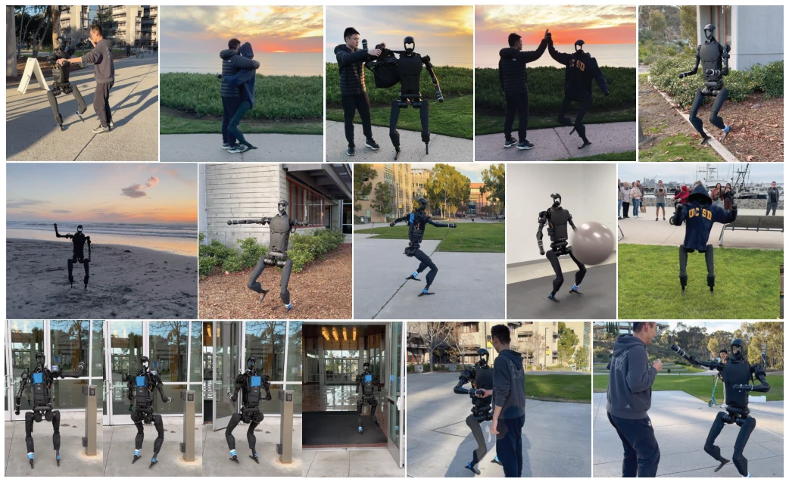
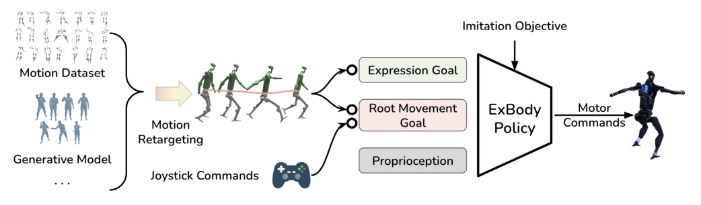
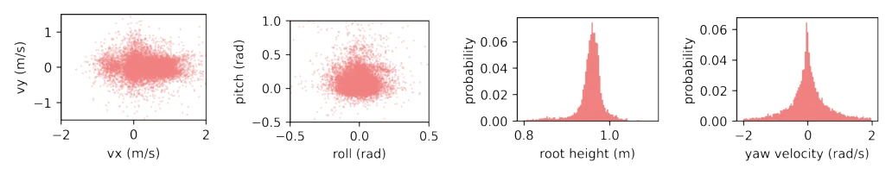
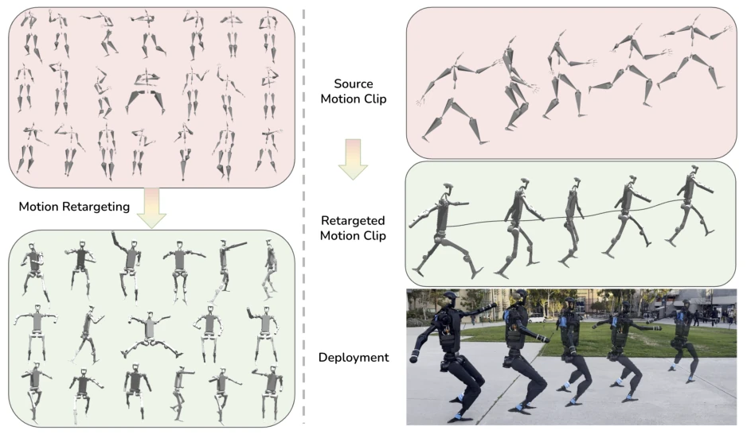
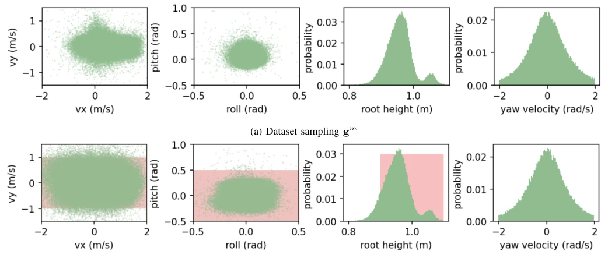
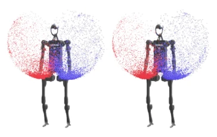
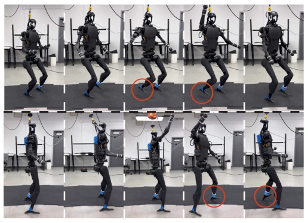
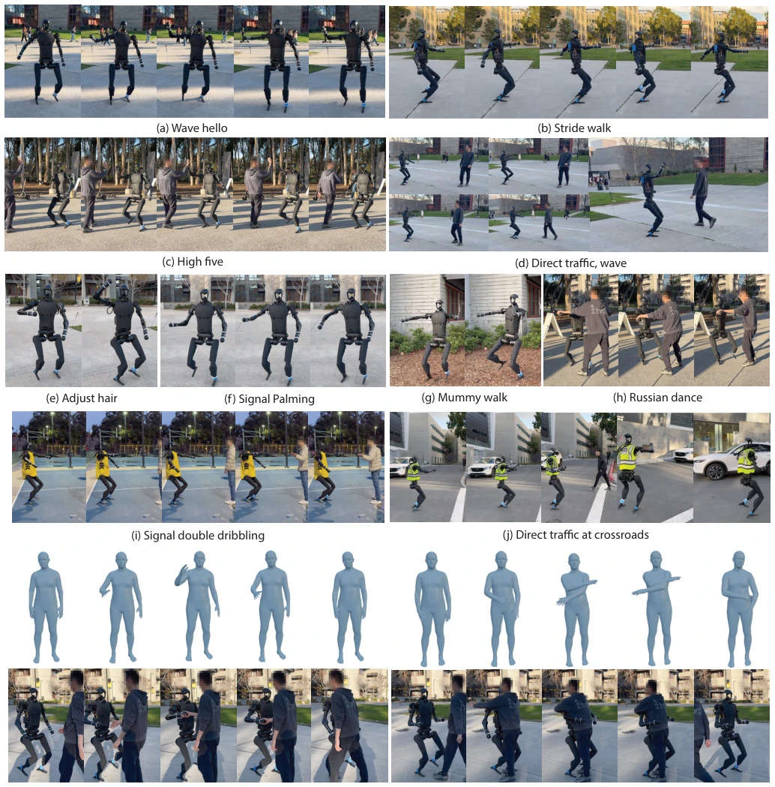
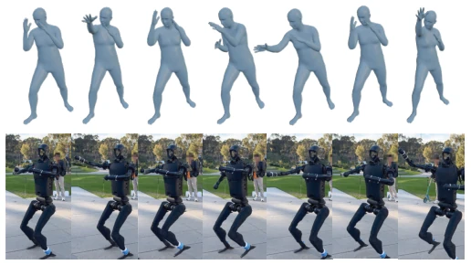

This paper equips the Unitree H1 with a 'dance pack', enabling the robot not only to walk but also to wave and high-five. The core strategy is somewhat 'opportunistic': the upper limbs strictly imitate human actions, while the lower limbs only need to stay stable and not fall, avoiding competing with the 69 degrees of freedom of a real human. Although the title claims 'expressiveness', the essence is still a combination of reinforcement learning and motion capture data. The advantage lies in the good Sim2Real effect, where the physical robot can interact with humans; the disadvantages are also obvious: limited to 19 degrees of freedom, many human actions can only be 'similar in form', and it relies on simulation environment training, so if the physical robot falls and breaks, it needs repair. It counts as advancing 'anthropomorphism' from the visual level to the control level, but it is still far from true 'emotional expression', more like 'mechanical dance'. However, for the field of humanoid robot control, this counts as a solid attempt, at least proving that large-scale data-driven strategies can learn richer behaviors than traditional control.
Existing robot control often sacrifices action richness for stability, resulting in single motion patterns [1, 2]. Physical animation in computer graphics, although realistic, relies on actuator gains up to 60kg/m, far exceeding real hardware capabilities [35]. If humanoid robots directly imitate human motion capture data, direct transfer will fail due to differences in degrees of freedom (DoF) and physical capabilities. We need a control strategy that can maintain robust walking while expressing intent (such as dancing, waving). Existing methods mostly focus on single tasks or have small data volumes, lacking large-scale data-driven full-body expressive control [11]. Additionally, many physics-based animation methods use privileged information, which cannot be obtained on real robots [4]. Therefore, how to achieve rich and robust full-body control under real hardware constraints is a pressing problem to be solved currently.

Fig. 1: Our Robot demonstrates diverse and expressive whole-body movements in different scenarios. Top Row: The robot is dancing, hugging and slapping hands with a human. Middle Row: The robot is able to walk on different terrains including gravel and wood chip paths, inclined concrete paths, grass, and curbsides with various expressions like zombie walk, exaggerated stride or waving. Bottom Left: The robot is able to use a waving gesture to open a wave-sensing door. Bottom Right: The robot is shaking hands and provoking.
The framework is divided into data preparation, motion retargeting, and reinforcement learning training. First, 780 actions are filtered from CMU MoCap and retargeted to H1's 19 degrees of freedom. The core innovation is the ExBody policy: dividing the target space into expression goals $g_e$ (upper limb joints/keypoints) and root motion goals $g_m$ (velocity/pose). During training, the upper limbs strictly imitate reference actions, while the lower limbs only require robust tracking of root motion velocity, without forcing joint angle matching, to avoid over-constraint. Goal-conditioned RL is adopted, with Random State Initialization (RSI) in Isaac Gym to enhance generalization. The reward function includes expression tracking, root motion tracking, and regularization terms, such as foot contact force and collision penalties. The policy observes proprioceptive information, but does not observe privileged information (such as absolute velocity), ensuring Sim2Real transfer. During deployment, the root motion goal can be given in real-time by controller commands, achieving interaction. This design balances expressiveness and stability.

Fig. 2: Overview of our framework. Our framework is able to train on data from various sources such as static human motion datasets, generative models, video to pose models that are widely available. After motion retargeting, we acquire a repertoire of motion clips that are compatible with our robot’s kinematic structure. We extract expression goal ge and root movement goal gm from the rich features from retargeted motion clips as the goal of our goal-conditioned RL objective. The root movement goal gm can also be intuitively given by joystick commands, enabling convenient deployment in the real world.

Fig. 3: Dataset visualization of our training data from CMU MoCap. We sample all the motion clips at an incremental of 1s. The resulting number of plotting data points are 1338. We can observe the bias of the distribution from human motions. Such distributions are proven to help policy learning in Sec. IV.

Fig. 4: Left: During training, we extract a large repertoire of retargeted motion clips and train our ExBody policy. Right: During deployment, we can replay motion that can come from a variety of sources such as static motion datasets, diffusion models, or video-to-skeleton models. For Unitree H1, the robot we use, the shoulder and hip joints have three perpendicular DoFs. Other joints are 1 DoF each. There are 19 DoFs in total. We also notice that some of the retargeted motions exhibit exaggerated movement with robot’s lower body, which is why we use ExBody to make it transferrable.
Evaluated on simulation and physical robot (Unitree H1). Comparison baselines include ExBody+AMP, full-body tracking, random sampling, etc. Metrics include linear velocity tracking reward (MELV), pose tracking (MERP), etc. Results show ExBody is superior to AMP and full-body tracking in speed tracking and stability, with fewer falls and higher foot clearance in physical robot tests. Ablation studies show that Random State Initialization (RSI) and upper limb relaxation and lower limb constraint are key. Physical robot demos showed dancing, high-fiving, door opening, etc., proving the effectiveness of Sim2Real. Additionally, text-generated actions combined with diffusion models (MDM [54]) can also be robustly reproduced by the robot, demonstrating the generality of the framework.

Fig. 5: Policy’s state distribution under different sampling strategies. The green dots are the policy rollout’s states. For dataset sampling, we record 20 data points for 4096 environments with randomly sampled arm trajectories from our training set. For random sampling, he red shade represents the randomly sampled gm range. For yaw velocity, we do not sample the command, because the policy observes the difference between the desired and actual yaw, and does not explicitly track the angular velocity. The second peak in root height is the initialization bias.

Fig. 6: We sample 10,000 points of hand positions relative to the robot. Left: retargeted motion dataset. Right: learned ExBody policy rollouts. The upper body movement from the dataset forms a natural distribution for learning.

Fig. 7: H1 robot doing a High Five in the real world. Top Row: ExBody only (Ours) walks with more bent knees and has more foot height clearance. Bottom Row: ExBody + AMP tends to walk in a straight-leg way and has less foot height clearance during walking.

Fig. 10: Expressive motion evaluation in the real world. Target motions of (a)-(j) are from CMU MoCap. Target motions of (k) and (l) are prompted using MDM [54]. The prompts respectively are ”moving arm out to shake hands” and ”a person crosses their arms and then puts them back to their side”.
其他图片Other Figures

Fig. 9: Text2Motion trajectories replay. A motion sequence is prompted offline with the input ”a man mimics boxing punches” through MDM [54]. Our robot presents robust, responsive, and precise tracking performance.